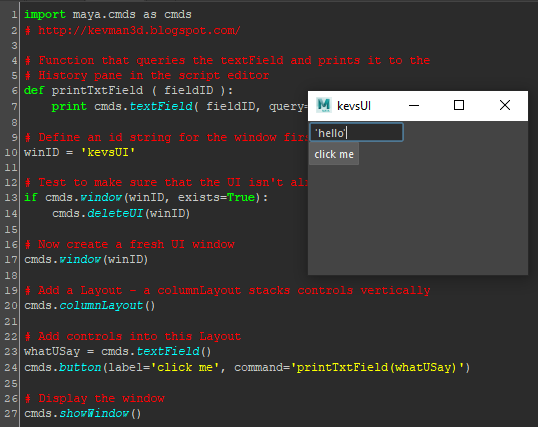
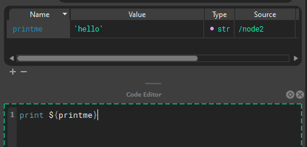
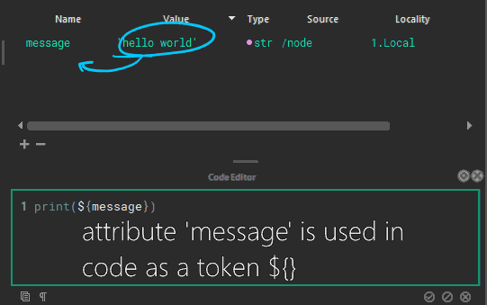
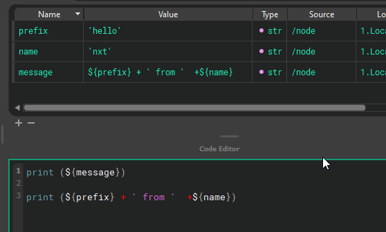
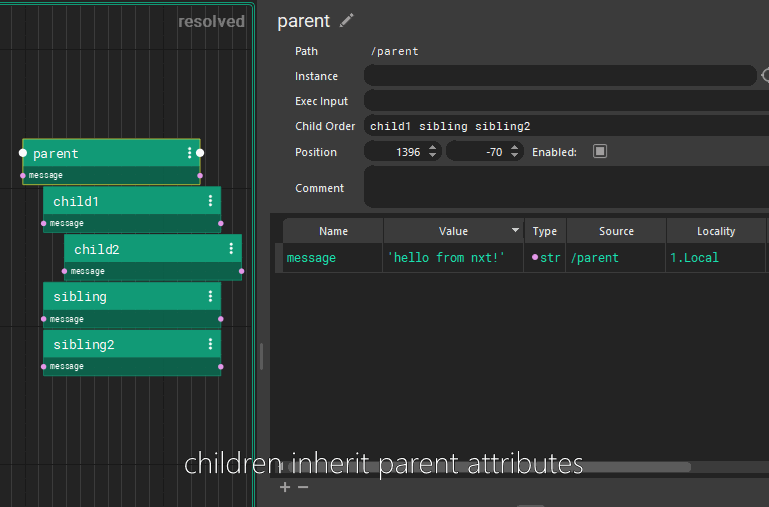
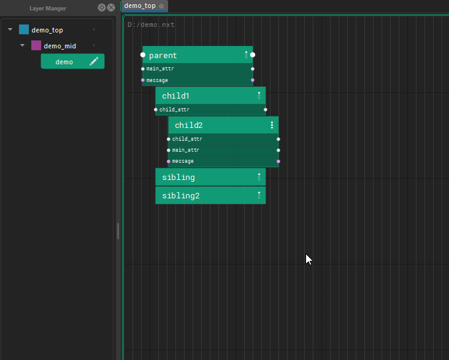
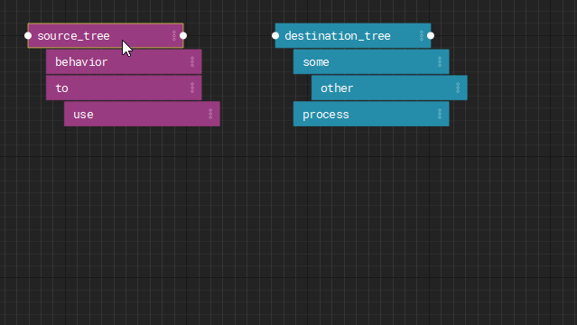

Concept quick start
Nodes
Graphs are made of node hierarchies. Node hierarchies can be collapsed by double clicking. During execution, a root node is executed, then it's descendants are executed depth first, then the next root node is begun. Execution sequencing between nodes is done via a special attribute: "Exec Input" where a node specifies the root node that is before it in execution.

In the above example, the execution order would be: /parent, /parent/child1, /parent/child1/child2, /parent/sibling, /parent/sibling2, /node, /node/node
Attributes
Rather than building a custom UI to interact with code, you edit attributes on nodes in a familiar property editor. Nxt substitutes attributes into the body of the code on the fly and generates linearly executed bespoke programs. It lets you interact via properties without writing, managing, and extracting data from a UI.
| All of this to print a value | Less |
|---|---|
 |
 |

Attributes can refer to other attributes and are composited on the fly, or attributes can be used directly in code. These are called tokens.

Inheritance
Each tree inherits all the attributes of their parent nodes. (All of this can be easily hidden via 1,2,3 hotkeys) Those attributes are available to child nodes. Each child node can overwrite the value, or use the inherited value.

Layers
Nxt also incorporates a layering model where attributes and code can be overridden by nodes on higher layers and leave the underlying structure intact.

Instances
Finally, any node can be instanced and overridden by layers or nodes.
Instancing allows you to reuse node trees from other parts of the graph with specific overrides.
